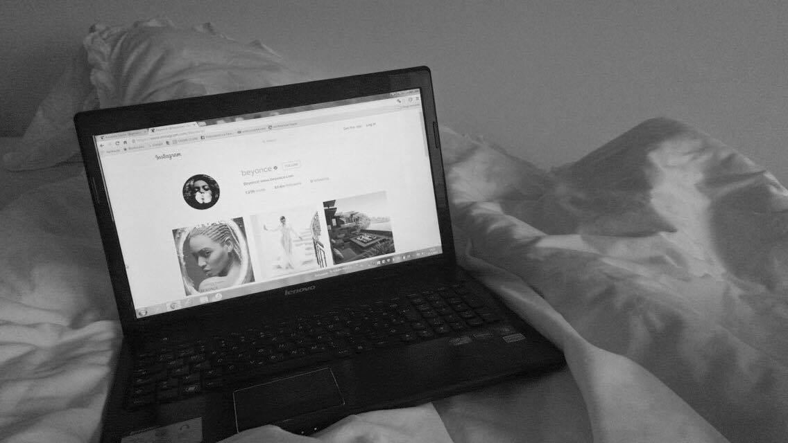

Na naše razumevanje in odnos do feminizma pa tudi zelo vplivajo mediji in slavne osebe, ki so vedno na očeh javnosti in njihova interpretacija feminizma lahko zelo vpliva na našo. Skozi zgodovino so vedno obstajali določeni zvezdniki, ki so bili vzor mladim in so ustvarjali trende. Danes je med zvezdnicami še posebej popularen trend feminizma, ki ga uprizarjajo skozi tekste popularne kulture in samoreprezentacijo na družbenih omrežjih. Nekatere zvezdnice imajo pozitivno mnenje o feminizmu, druge pa ne.
Za primer lahko vzamemo pevko Miley Cyrus, katere Instagram profil je sestavljen iz fotografij poraščenih pazduh, golega telesa, samooznačevanja s feministko, uporabe ključnikov (hashtagov), kot je na primer #FreeTheNipple, in identifikacije spolne usmerjenosti z biseksualnostjo.
